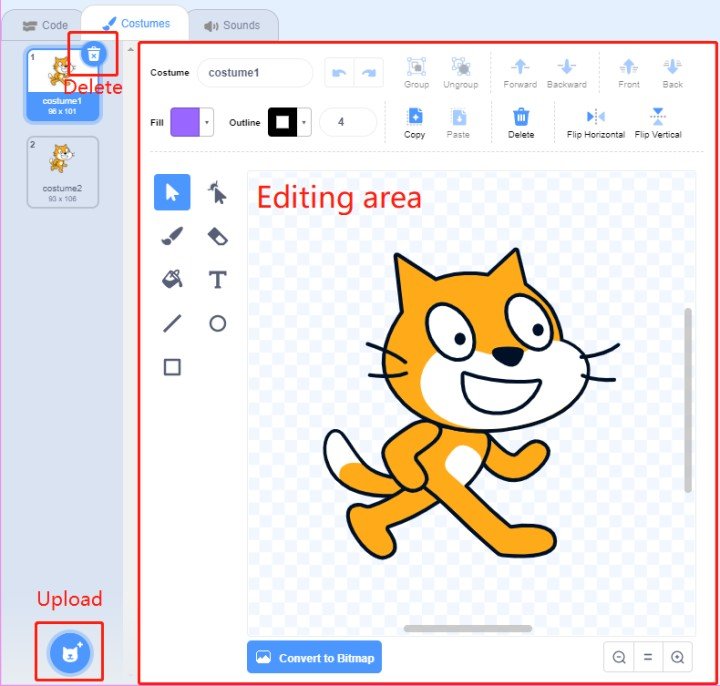
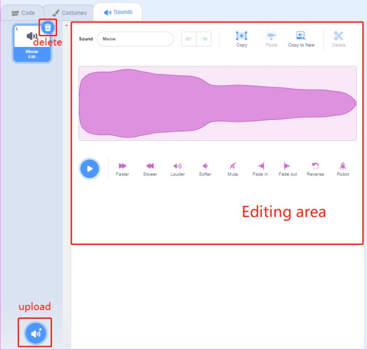

Nota
Ciao e benvenuto nella Community di appassionati di SunFounder Raspberry Pi, Arduino e ESP32 su Facebook! Approfondisci Raspberry Pi, Arduino e ESP32 insieme ad altri appassionati.
Perché Unirsi?
Supporto Esperto: Risolvi problemi post-vendita e sfide tecniche con l’aiuto della nostra comunità e del nostro team.
Impara e Condividi: Scambia consigli e tutorial per migliorare le tue competenze.
Anteprime Esclusive: Ottieni accesso anticipato a nuovi annunci di prodotto e anteprime.
Sconti Speciali: Approfitta di sconti esclusivi sui nostri prodotti più recenti.
Promozioni Festive e Giveaway: Partecipa a giveaway e promozioni speciali.
üëâ Pronto a esplorare e creare con noi? Clicca su [Qui] e unisciti oggi!
Guida Rapida a Scratch
Nota
Quando programmi con Scratch 3, potresti aver bisogno di uno schermo per una migliore esperienza. Naturalmente, se non hai uno schermo, puoi anche utilizzare VNC per accedere al desktop di Raspberry Pi da remoto. Per un tutorial dettagliato, consulta VNC.
Inoltre, Scratch 3 richiede almeno 1GB di RAM per funzionare correttamente. Raccomandiamo un Raspberry Pi 4 con almeno 2GB di RAM. Anche se Scratch 3 può essere eseguito su Raspberry Pi 2, 3, 3B+ o un Raspberry 4 con 1GB di RAM, le prestazioni su questi modelli sono ridotte. A seconda degli altri software in esecuzione contemporanea, Scratch 3 potrebbe non avviarsi per mancanza di memoria.
Installare Scratch 3
Durante l’installazione di Raspberry Pi OS (Installazione del sistema operativo), è necessario scegliere una versione con desktop, sia con solo desktop che con desktop e software raccomandato.
Se installi la versione con il software raccomandato, troverai Scratch 3 nel menu di sistema sotto Programmazione.
Se hai installato solo la versione con desktop, dovrai installare Scratch 3 manualmente come descritto di seguito.
Apri il menu, clicca su Preferenze -> Software Raccomandato.

Trova Scratch 3, selezionalo, clicca su Applica e aspetta il completamento dell’installazione.

Una volta completata l’installazione, dovresti vederlo in Programmazione nel menu di sistema.

Interfaccia di Scratch 3
Scratch 3 è progettato per essere divertente, educativo e facile da imparare. Include strumenti per creare storie interattive, giochi, arte, simulazioni e molto altro, utilizzando la programmazione a blocchi. Scratch ha anche un proprio editor di immagini e suoni integrati.
Nella parte superiore di Scratch 3 ci sono alcune opzioni di base. La prima da sinistra è l’opzione per selezionare la lingua. La seconda è l’opzione File, per creare nuovi file, aprire file locali e salvare quelli correnti. La terza è l’opzione Modifica, che consente di riprendere operazioni di eliminazione e attivare la modalità di accelerazione (in cui il movimento dello sprite diventa particolarmente veloce). La quarta è l’opzione Tutorial, per visualizzare tutorial di alcuni progetti. La quinta opzione è per il nome del file, dove puoi rinominare il progetto.

Codice
L’interfaccia di Scratch è suddivisa in tre sezioni principali: area di scena, palette dei blocchi e area di codifica. Per programmare, trascina i blocchi dalla palette dei blocchi nell’area di codifica, e i risultati della tua programmazione saranno mostrati nell’area di scena.

Questa è l’area sprite di Scratch 3. Nella parte superiore si trovano i parametri di base degli sprite, puoi aggiungere quelli inclusi in Scratch 3 o caricare sprite locali.

Questa è l’area sfondi di Scratch 3, per aggiungere un sfondo adatto alla tua scena. Puoi scegliere tra gli sfondi predefiniti di Scratch 3 o caricarne uno locale.

Questo è il pulsante Aggiungi Estensione.

In Scratch 3, è possibile aggiungere varie estensioni utili. Qui utilizziamo l’estensione Video Sensing come esempio. Cliccaci sopra.

Vedrai l’estensione nella palette dei blocchi e potrai utilizzare le funzioni associate. Se hai una fotocamera collegata, vedrai la schermata della fotocamera nell’area di scena.

Costumi
Clicca su Costumi nell’angolo in alto a sinistra per entrare nella palette dei costumi. Diversi costumi permettono agli sprite di avere movimenti statici diversi, e quando questi movimenti statici sono concatenati, formano un movimento dinamico coerente.
Suoni
Potresti voler utilizzare dei clip musicali per rendere i tuoi esperimenti più interessanti. Clicca su Suoni nell’angolo in alto a sinistra per modificare il suono corrente o selezionare/caricare uno nuovo.
